American Fuzzy Lop plus plus (AFL++)
AFL++ is a fork of AFL with more features and options
Features
- A fuzzer with many mutators and configurations: afl-fuzz
- Different source code instrumentation modules: multiple LLVM-based variants, GCC plugin
- Different binary code instrumentation modules: QEMU mode, Unicorn mode, QBDI mode
- Utilities for testcase/corpus minimization: afl-tmin, afl-cmin
- Various helper libraries
- Reference:AFLplusplus ; aflplus.plus
AFL++ Operation
- Fork a new process (before main() is entered)
- Fork point can be modified to avoid costly initialization procedures README
- Feed it an input modified by the mutation engine
- Different mutation algorithms are available
- Custom mutator interface: custom_mutators
- Monitor the coverage and notify afl-fuzz about any crashes/hangs
- Prefer inputs that create additional coverage for next iteration
- GOTO 1
Fuzzing Harness
- Can be thought as an "entry point"
- Accepts testcases from fuzzer and feeds them to the fuzzing target
- Often based on existing testing/debug interfaces
- Examples:
- Network server-client program: Encapsulation of the server's client interface that bypasses the actual network communication
- Image processing library(libpng): A wrapper around an API in the target library that takes png formatted input and performs operations on it
AFL++ specific aspects
- AFL++ is primarily a fuzzer for fuzzing instrumented binaries
- Instrumentation is done at compile time
- Target needs to be an executable binary, for which ideally the source code is available (easier instrumentation)
- Network server case: Do not use socket, but feed input to corresponding package parsing code
- Library case: Binary can internally call the API that needs to be fuzzed
- Firmware/embedded device case:
- Emulation using unicorn
- Rehosting
- Custom instrumentation and feedback
Example: Fuzzing an file format parser
- Try to always build a static binary, do not use dynamic linking if somehow possible!
- Either modify your environment variables, or create a new target
CC = clang => CC = afl-clang-fast
CFLAGS = ... => CFLAGS = ... -DFUZZING=1
...
- or pass the compiler and and flags to your build system. E.g.,
CC=afl-clang-fast CXX=afl-clang-fast++ ./configure --disable-shared
Reading input from stdin or files
afl-fuzz expects the target to accept client input either via stdin
./your_binary < /PATH/TO/YOUR/INPUT
or via file : Filename is passed via command line arguments
./your_binary /PATH/TO/YOUR/INPUT
Instrumentation Options
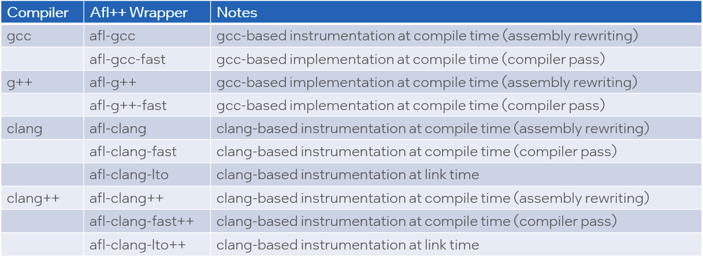
Instrumentation BKMs
- Prefer clang over gcc based instrumentation
- Choose afl-clang over afl-gcc
- Prefer instrumation via compiler pass over assembly rewriting
- Choose afl-gcc-fast or afl-clang-fast over afl-gcc or afl-clang
- Evaluate LTO based instrumentation
- Collision-free instrumentation due to global vison of target
A note on optimizations
- afl compiler wrappers by default set –O3
- Agressive optimization to improve performance
- This may hide issues hidden in code that is optimized out
- Actually this in itself may hint at a problem in your code
- Suggestion to use the compiler optimization level of your production code
- You can also completely deactivate optimization by afl compiler wrappers using the AFL_DONT_OPTIMIZE environment variable
AFL_DONT_OPTIMIZE = 1
Fuzzing with AFL++
Once your harness is ready, use afl-fuzz to fuzz it. In this example we read input via stdin 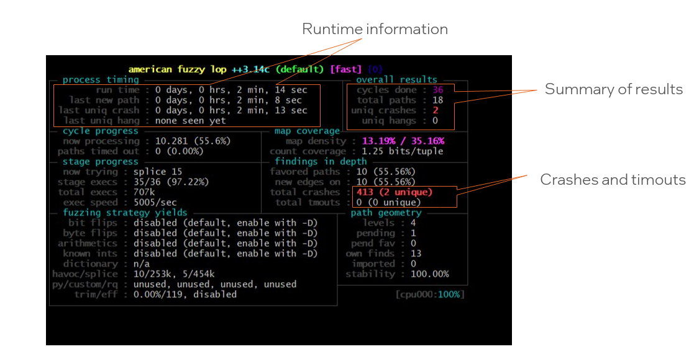 Once fuzzer is lauched, you will see the stats: 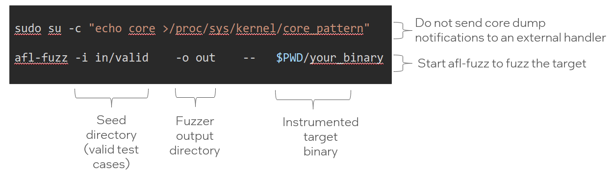
AFL++ output folder
- afl++ output directory contents 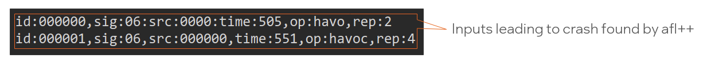
- Feeding afl++ findings into your target (in this case via stdin)
./your_binary < ~/src/out/default/crashes/id:000000,sig:06:src:0000:time:505,op:havoc,rep2
- Use your standard debugging tools to dig deeper (e.g., gdb)
- More details on bug triage in a follow-up training
Scaling fuzzing with AFL++
- Fuzzing with one afl++ instance is not sufficient
- afl++ is not multithreaded. Scale by synchronizing multiple afl++ instances
- afl++ instances are synchronized via the out folder
Master fuzzer process:
$afl-fuzz –M master -i in/valid -o out -- $PWD/your_binary
Slave processes:
$afl-fuzz –S slaveNNN -i in/valid -o out -- $PWD/your_binary
Deferred Initialization
- afl++ fork server forks before main(...) method is executed
- This can be inefficient if there in case of slow intialization code
- Deferred Initialization provides manual control over fork server
- Before using this study the following to learn about limitations (e.g., for NNN in 000 ... 100) README
// ... costly initialization code ...
#ifdef __AFL_HAVE_MANUAL_CONTROL
__AFL_INIT(); # AFL will start forking the process here
#endif
Persistent Mode
- Forking is an expensive and slow operation
- Persistant mode allows feeding multiple inputs into one forked target in a serial fashion
- Note that input may effect the state of your program
- You may have to manually reset the state of your target program between invocations
- Beyond fuzzing in parallel this is the main scaling mechanism of afl++. Use it!
- Reference: README
Outlook
- afl++ can and should be used with Sanitizers for more efficient bug hunting
- Coverage analysis is a useful tool to identify roadblocks for afl++
- More advanced topics are discussed in the afl++ documentation
- Reference: Fuzzing in Depth
- A dynamic analysis tool to detect low level violations
- For example: memory safety/type safety violations
- Doesn't aim for program properties
- Popular Sanitizers: Address Sanitizer, Undefined Behavior Sanitizer etc.
- AFL++ can be paired with different sanitizers to enhance crash-detection capability
AddressSanitizer (aka ASan)
- Detects memory errors by placing red zones
- Typical slowdown is 2x
- Flag: -fsanitize=address
- Can detect
- Out-of-bounds accesses to heap, stack and globals
- Use-after-free
- Use-after-return
- Use-after-scope
- Double-free, invalid free
- Can use massive amounts of memory
- Use –m32 compiler flag to compile 32-bit version of target if possible! stack-buffer overflow
int main(in argc, char **argv) {
int buffer[20];
buffer[1] = 0;
return buffer[argc+20];
}
% clang –fsanitize=address ./stack_overflow.
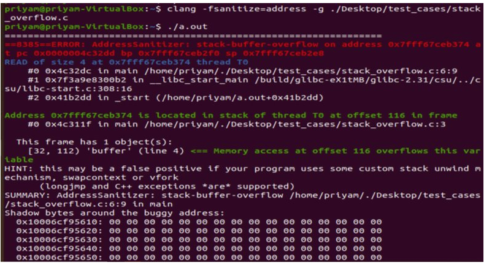
MemorySanitizer (aka MSan)
- Detects uninitialized reads
- Tags memory allocations and flags uninitialized reads
- Slowdown is around 3x
- Only supported in 64 bit mode
- Flag: -fsanitize=memory
#define SIZE 20
int main(int argc, char** argv) {
int* a = malloc(SIZE);
a[5] = 0;
if (a[argc])
printf("xx\n");
return 0;
}
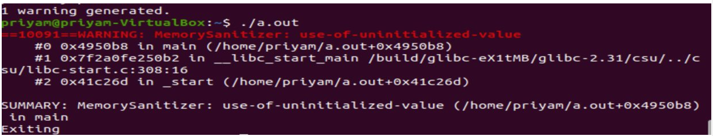
Undefined Behavior Sanitizer (aka UBSan)
- Detects typical undefined behavior in C/C++ programs
- Slowdown usually depends on the number of checks
- Flag: -fsanitize=undefined
- Detects errors such as
- Using misaligned or null pointer
- Signed integer overflow
- Conversion to, from, or between floating-point types which would overflow the destination
int main(int argc, char **argv) {
int k = 0x7fffffff;
k += argc;
return 0;
}
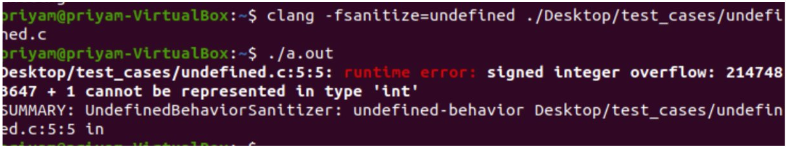
Leak Sanitizer
- Detects run-time memory leaks
- No performance overhead until the very end of the process
- Flag: -fsanitize=leak
void *p;
int main() {
p = malloc(7);
p = 0;
return 0;
}
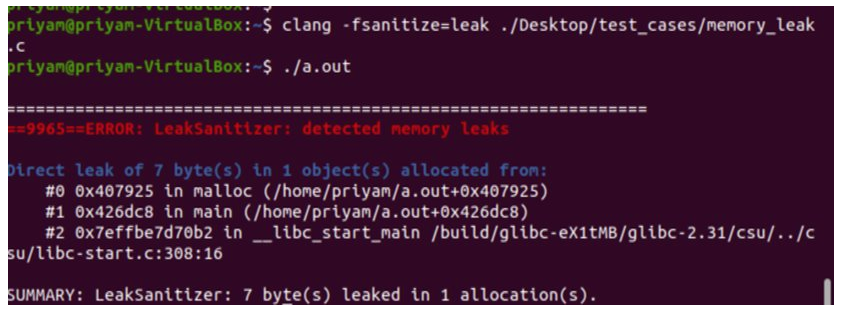
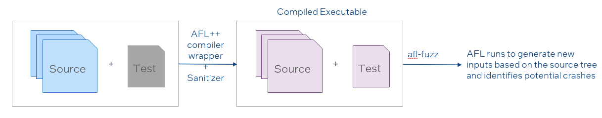
- Activate sanitizers via environment variable when compiling
- We recommend to not use multiple sanitizers in one fuzzer instance since it may cause the fuzzer to miss issues
- When fuzzing in parallel, you can and should use different sanitizers on different afl++ instances
- Reference: c-sanitizers
AFL++ and Sanitizers – what works well
Automation
- It is fast, efficient, effective
- Easier to verify bug fixes (just re-run the test with the input that caused a crash)
Certain types of code lend themselves well to such analysis
- Parsers: network packets, files, user input
- Servers: with transformation to take input from a file rather than a network socket
- Libraries: cryptography utilities, string utilities, file-manipulation utilities, data encoding utilities
AFL++ and Sanitizers - Limitations
- Does not catch direct logical/semantic errors
- Reading the wrong bit in a register, wrong branching in code
- Long execution time
- For effective coverage, depending on code depth, needs to run for a long time.
- Can be mitigated by parallelization and limiting scope
- Does not catch ‘All' buffer errors
- AFL attempts to hit every branch of code
- When a branch is hit, even if a bug exists, a crash only occurs if AFL uses the correct (malformed) input
Input: buffer (variable length: 1-10)
msg_id = buffer[0]
if (msg_id == 1)
temp = buf[5] ----> //When AFL hits this branch, it should use an input that is lesser than 6 bytes long to trigger a crash. But this may not always be the case.
else if (msg_id == 2)
temp = buf[9]
else if (msg_id == 3)
temp = buf[1]
Ways to triage Bugs
- Trace collection of crashes
- Crash statistics
Example: Stack Buffer Overflow
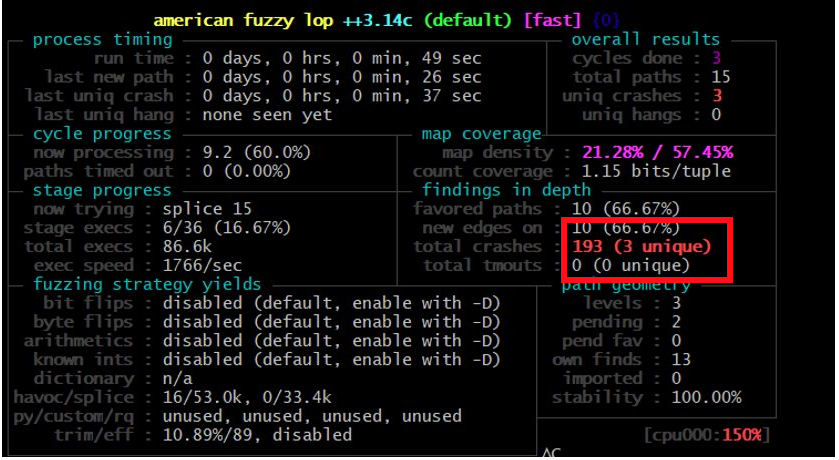Output directory: Contains information specific to crashes and interesting inputs 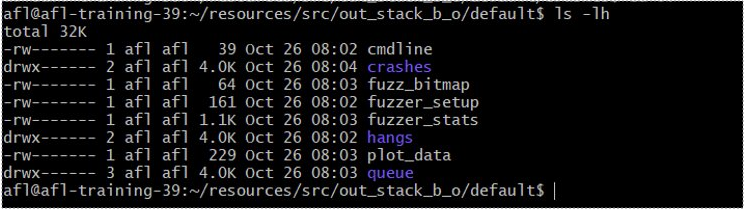Crashes: Number of unique crashes plus an auto-generated README.txt file 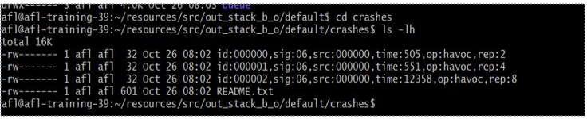Fuzzer_stats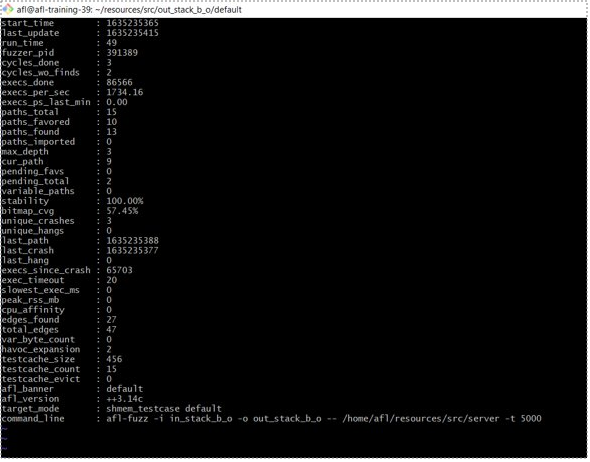
Reproducing the crashes
$$ gdb ./server
$$ r < id:000000,sig:06,src:000000,time:505,op:havoc,rep:2
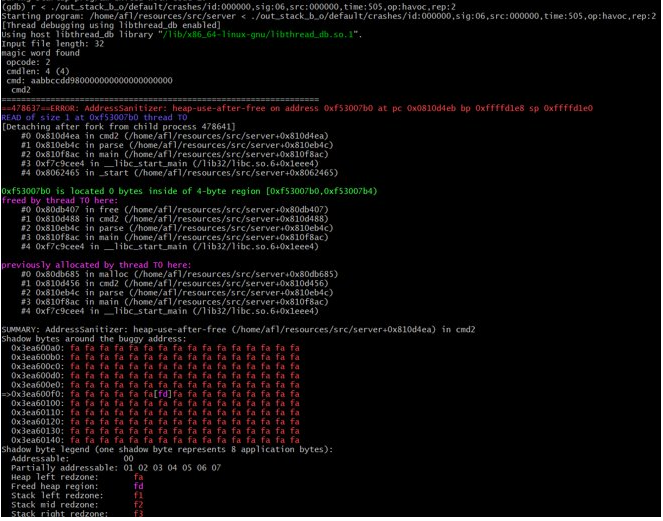
Coverage: Measurement of code segments explored by the fuzzing mechanism
- Widely used as part of software testing to discover untested code segment
- This information is used to make informed decisions about which inputs to mutate Intuition: A software flaw is only detected if the flawed statement is executed. Effectiveness of test suite therefore depends on how many statements are executed
- How can we that ensure we have tested a function/code segment "enough"?
- We need a metric to establish the ground truth
- Coverage helps us to establish that truth
How to Collect Coverage
- Several tools are available
- For afl++-based fuzzing afl-cov is the most interesting one
afl-cov in practice
- Compile a copy of the target with coverage collection enabled
$ LDFLAGS="-lgcov --coverage" afl-clang-fast -fprofile-arcs -ftest-coverage -DFUZZING=1 your_program.c –o your_binary.cov
- Run afl-cov.sh script afl-cov on output from fuzzing campaign
$ afl-cov.sh -c out/ "./your_binary.cov < @@"
- In this example input is expected via stdin. @@ will be replaced with the input vectors
- afl-cov.sh will feed the input vectors into the binary and collect coverage information
afl-cov in practice
- afl-cov will generate a standard lcov report
- This gives an indication about areas that have not been explored by the afl++
- Helps to identify fuzzing roadblocks 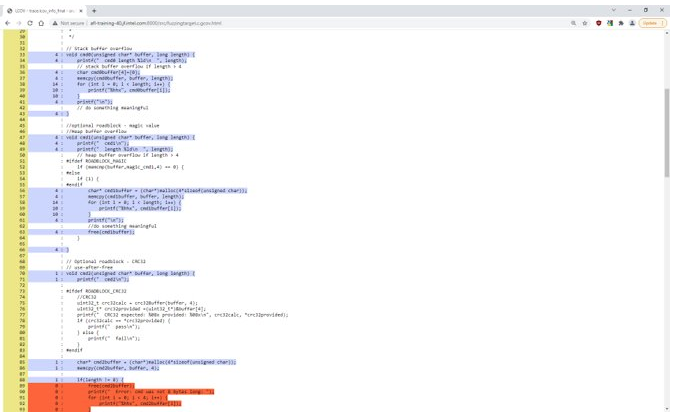
Setup
Use a recent browser to go to: https://ipas-osr-lab.jf.intel.com/
Please login with the username and password provided to you.
If your connection gets dropped just reopen the page again and you should be dropped into the same session. 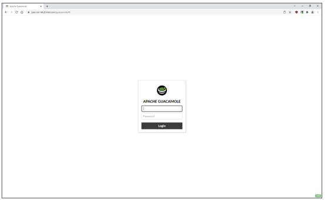
Enable copy/paste
- Enable clipboard access in your browser to be able to copy/paste from / to your local machine
- Copy and paste works like you would expect on a Linux machine
- Press and hold left mouse button to select text
- Press right mouse button to paste 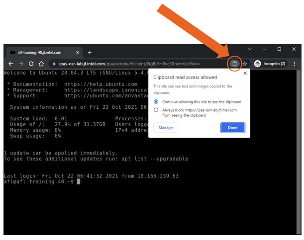
Logging in
You will be dropped into a bash shell on your dedicated environment. This is a Ubuntu 20.04 VM which we can export to you after the training if needed.
Note: This machine has Internet access via proxy-dmz.intel.com.
DISCLAIMER: DO NOT STORE OR ACCESS ANY INTEL TOP SECRET MATERIAL ON THIS VM IN THIS ENVIRONMENT!
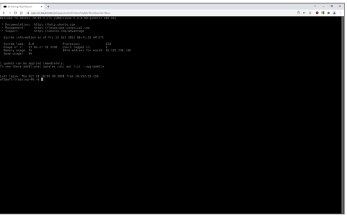
Toggle screens
Use ++ to toggle the remote access settings. Here you can increase the font size if needed.
Note that your browser may capture some common keyboard shortcuts, such as CTRL-W (close browser tab / search in nano editor). 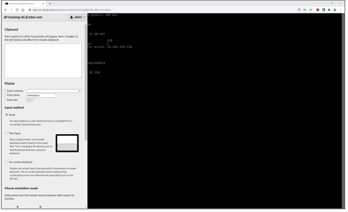
Deployed software and exercises
- You should not need to install any additional software.
- Common preinstalled editors:
- vi(m)
- emacs
- nano – note that ctrl-w closes the browser tab!
- hexcurse (F1 for help)
- Training exercises are in the src directory in your home directory
- Solutions for the exercises are available in the src/exercises folder. Please try to solve the exercises without looking at the solutions first.
Target: Simple network server
- Code is deployed in the /home/afl/src directory
- Network server: fuzzingtarget.c is the network server
- Client: client.c is the network client
- Useful common logic: common.c
- Example valid and invalid input in src/in directory
- Makefile for GNU make Note: The target contains some code that is disabled via #ifdefs (e.g., CRC32 input checking). Please ignore this for this for now!
Input Structure
- Fixed 32 byte input expected from client
- Command Handlers for different commands
- Command 0...4 are supported
- Functions cmd0(...) ... cmd4(...)
- No „real program logic" implemented, only some potential vulnerabilities in the cmd0(...) ... cmd4(...) command handlers
Task: Server reading input from stdin
- Client reads input from stdin, server from network socket
- Valid inputs are provided in the src/in/valid directory
./client < in/valid/INPUT_VECTOR
Modify the server to read input for the parse(...) method from stdin instead of from a network socket. Reuse the client codebase. When done, you should be able to call the server like this:
./server < in/valid/INPUT_VECTOR
Task: Compile server with afl-clang-fast instead of clang
- Use and extend the provided Makefile
- You can use the server target as a template to define a server-afl target
- Use the afl-clang-fast compiler wrapper instead of clang
- LTO based implementation (afl-clang-lto) seems a little unstable
- Note: set the following environment variable when compiling. This is needed since the afl++ compiler wrappers set –O3 by default which can lead to false negatives!
AFL_DONT_OPTIMIZE = 1
Task: Run afl-fuzz to fuzz the server
- Once your harness is ready, use afl-fuzz to fuzz it
- Read input via stdin! See client code. 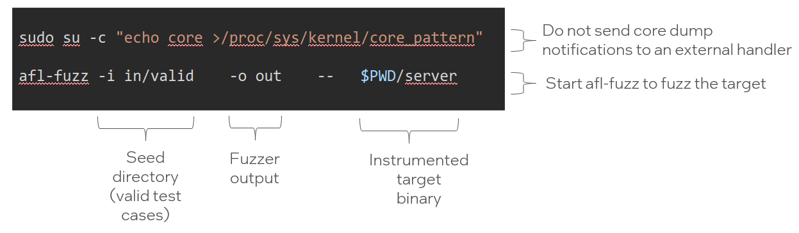
Solution
- Please try to solve the exercise yourself
- If you are stuck, ask for help and/or take a look at the solution provided in /home/afl/src/solution
Task: Compile with sanitizers enabled
- When using AFL++ compiler wrappers sanitizers are enabled via environment variables
- This replaces explicit the –fsanitize=... compiler option
- Don‘t forget to use –m32 compiler option!
# Enable Address Sanitizer
AFL_USE_ASAN=1 AFL_DONT_OPTIMIZE=1 afl-clang-fast –m32 ...
# Enable Undefined Behavior Sanitizer
AFL_USE_UBSAN=1 AFL_DONT_OPTIMIZE=1 afl-clang-fast –m32 ...
# Enable Leak Sanitizer
AFL_USE_LSAN=1 AFL_DONT_OPTIMIZE=1 afl-clang-fast –m32 ...
...
Example for afl with ASAN
# Enable Address Sanitizer
AFL_USE_ASAN=1 AFL_DONT_OPTIMIZE=1 afl-clang-fast -Wall -DFUZZING=1 -m32 fuzzingtarget.c ErriezCRC32.c common.c -o server
# Start fuzzing
afl-fuzz -i in/valid -o out -- $PWD/server
Task: Compile with sanitizers enabled
- Do not use multiple sanitizers on one target and afl-fuzz instance
- When fuzzing in parallel with multiple afl-fuzz instances you can (and should) run multiple instances with different sanitizers
- Modify the Makefile to create one ore more of the following targets
- afl-fuzz-asan – for creating a target instrumented with ASAN
- afl-fuzz-ubsan – for creating a target instrumented with UBSAN
- afl-fuzz-lsan – for creating a target instrumented with LSAN
- Compile the target(s)
- Run afl-fuzz as outlined before on one of the targets
- Collect crash information
Task: Collect crash information
- After running afl for a few minutes afl++ should start collecting crashes
- When crashes / sanitizer notifications are observed they are captured in src/out/default/crashes
- Manually feed the output in src/out/default/crashes into the instrumented server 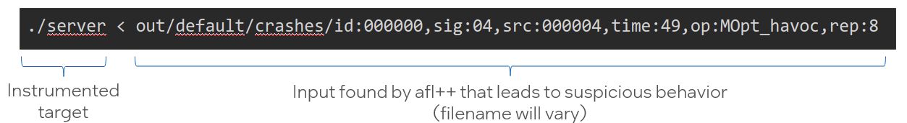
Task: Analyze crashes
Example: Output from UBSAN instrumented binary
./server < out/default/crashes/id:000000,sig:04,src:000004,time:49,op:MOpt_havoc,rep:8
Output:
Input file length: 32
magic word found
opcode: 0
cmdlen: b (11)
cmd: aabb29dd003400ffffff35064000000000
cmd0 length 11
fuzzingtarget.c:39:24: runtime error: index 4 out of bounds for type 'char [4]'
SUMMARY: UndefinedBehaviorSanitizer: undefined-behavior fuzzingtarget.c:39:24 in aabb29dd003400ffff
afl-cov in practice
- Output will be created in out/default/cov/web/
- Open in browser or expose via webserver (e.g., using python http.server)
- Use your server‘s hostname to figure out the URL to access the web interface:
python3 -m http.server --directory out/default/cov/web/
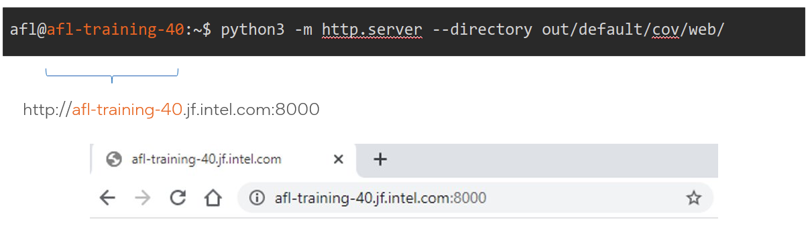